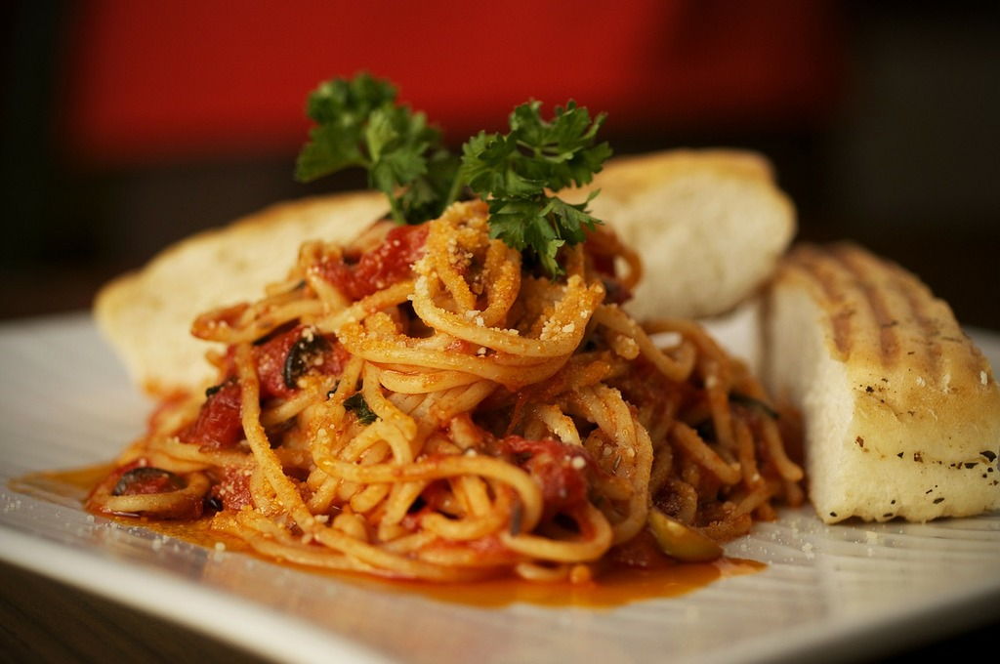

Home
Spaghetti bolognese

What is it?
There’s nothing like classic spaghetti and meat sauce to bring people together around the dinner table. This homemade spaghetti sauce with ground beef recipe will satisfy all your comfort food cravings.
Ingredients
- 2 tbsp olive oil
- 400g/14oz beef mince
- 1 onion, finely chopped
- 2 garlic cloves, finely chopped or crushed/li>
- 100g/3½oz carrot, grated
- 2 x 400g tins chopped tomatoes
- 400ml/14fl oz stock (made from stock cube. Ideally beef, but any will do)
- 400g/14oz dried spaghetti (or pasta shape of your choice)
- salt and pepper
Steps
- Heat a large saucepan over a medium heat. Add a tablespoon of olive oil. Once hot, add the beef mince and a pinch of salt and pepper. Cook the mince until well browned over a medium-high heat (don't rush this step but be careful not to burn the mince. It needs to be a dark brown colour with some crispy caramelised bits). Once browned, transfer the mince to a bowl and set aside.
- Add another tablespoon of oil to the saucepan you browned the mince in and turn the heat to medium. Add the onions and a pinch of salt and fry gently for 5–6 minutes, or until soft and translucent. Add the garlic and cook for another 2 minutes. Add the grated carrot. Return the mince (and any juices in the bowl) back to the saucepan.
- Add the tomatoes and stir well to mix. Pour in the stock and bring to a simmer. Reduce the heat and simmer gently for 45 minutes, or until the sauce is thick and rich. Taste and adjust the seasoning as necessary.
- When ready to cook the spaghetti, heat a large saucepan of water and add a pinch of salt. Cook according to the packet instructions.
- If your bolognese sauce is too thick, stir in 1–2 tablespoons of the starchy pasta water to loosen.
- Once the spaghetti is cooked through, drain and add the pasta to the pan with the bolognese sauce. Mix well and serve.